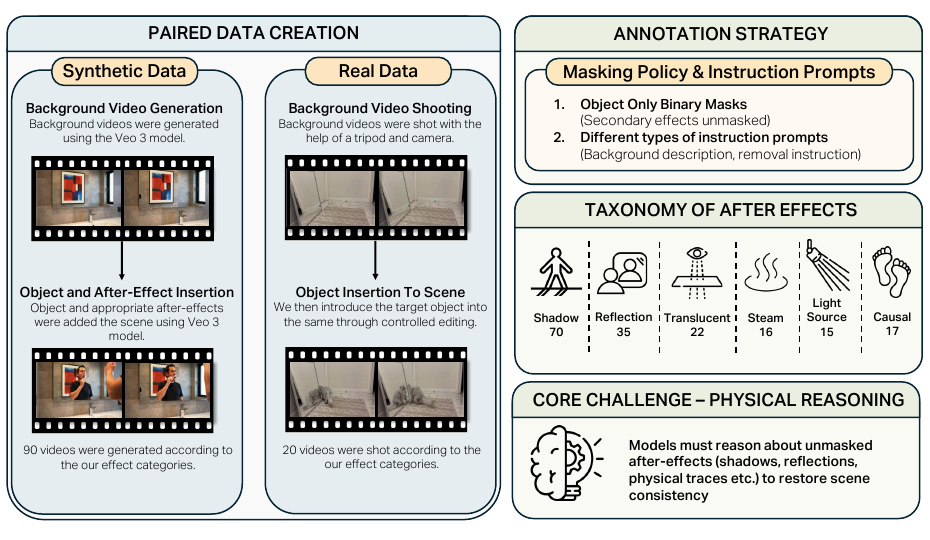
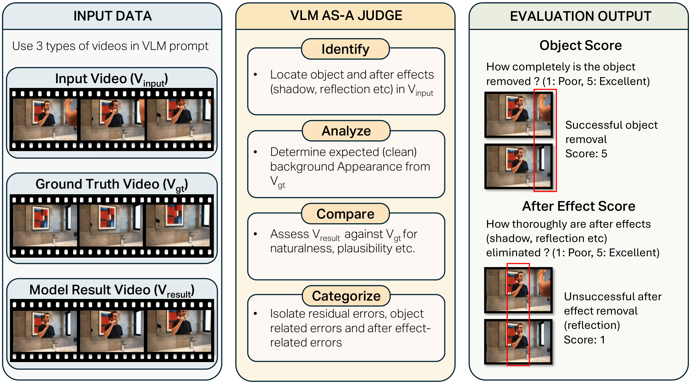

Paired references
Provide aligned videos before and after object removal, enabling direct comparison to clean scene states.
A paired benchmark for video object removal beyond the mask
1Bilkent University 2Koc University 3Hacettepe University 4KUIS AI Center * Equal contribution
BeyondMasks evaluates whether video object removal methods eliminate both the target object and the visual effects it induces in the surrounding scene, including shadows, reflections, translucency, steam, illumination changes, and fast motion scenes.
Most prior video object removal benchmarks primarily evaluate masked reconstruction or visual plausibility, and often do not provide aligned clean-reference videos. While recent benchmarks such as ROSE-Bench begin to study object-related side effects, BeyondMasks expands this setting with paired synthetic and real-world videos, broader after-effect categories, object-only masks, and support for both mask-guided and instruction-driven removal.
Provide aligned videos before and after object removal, enabling direct comparison to clean scene states.
Include object-induced effects that extend outside the object mask and are common in real removal tasks.
Report object removal and after-effect removal as separate scores under a structured evaluation protocol.
Evaluate mask-based, text-guided, and hybrid systems to identify where current methods fail.
We include benchmark groups covering object-induced after-effects and real-world captures; representative paired examples are shown below.
BeyondMasks contains 180 paired videos across synthetic and real-world scenes, with aligned clean references, per-frame object masks, and validated removal prompts. After-effect categories are not mutually exclusive; a single video may contain multiple interaction types.
We first generate a clean background video, then insert the target object and its associated after-effects using controlled video editing. Because the object-present video is derived from the clean reference, the pair remains temporally aligned.
We record each real scene with the object present and immediately capture a second video after removing the object, using a tripod-stabilized setup. This preserves viewpoint and composition while introducing natural lighting, texture, and interaction complexity.
We annotate temporally consistent masks for the target object only, leaving shadows, reflections, illumination changes, and other after-effects unmasked. Each sample also includes validated removal prompts for instruction-driven editing.

CORE evaluates each edited result using three temporally aligned videos: the object-present input, the clean reference, and the model output. It asks a VLM judge to compare the output against the clean reference and score object removal separately from after-effect removal.
Pixel metrics such as PSNR, SSIM, and LPIPS measure reconstruction similarity, but they can miss whether residual errors come from the target object or from object-induced effects such as shadows, reflections, illumination changes, and fast motion scenes.

Measures the completeness of target-object removal and the plausibility of the restored background.
Measures whether object-induced physical traces, including shadows, reflections, illumination changes, and dynamic perturbations, are eliminated.
CORE correlates with human judgments at 0.62 for ObjectScore and 0.73 for AfterEffectScore using Gemini, with similar agreement using GPT-based judging (0.60 and 0.76).
@misc{ekin2026beyondmasksevaluatingcausalphysical,
title={BeyondMasks: Evaluating Causal and Physical Consistency in Video Object Removal},
author={Yigit Ekin and Enes Sanli and Aykut Erdem and Erkut Erdem and Aysegul Dundar},
year={2026},
eprint={2608.20107},
archivePrefix={arXiv},
primaryClass={cs.CV},
url={https://arxiv.org/abs/2608.20107},
}